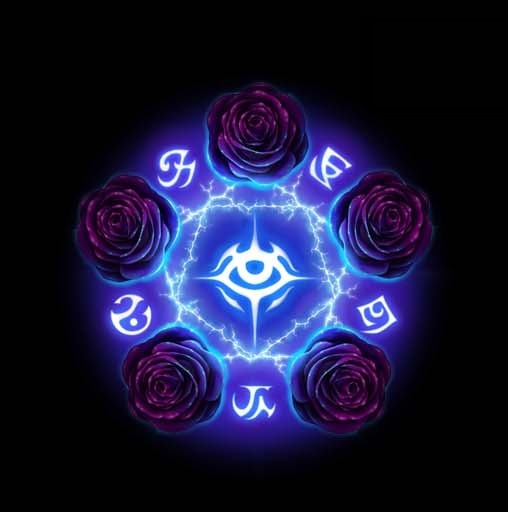
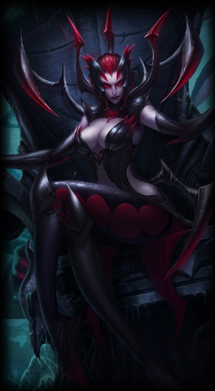
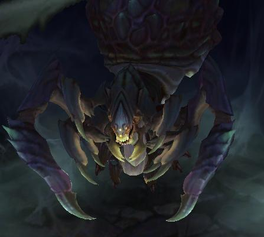
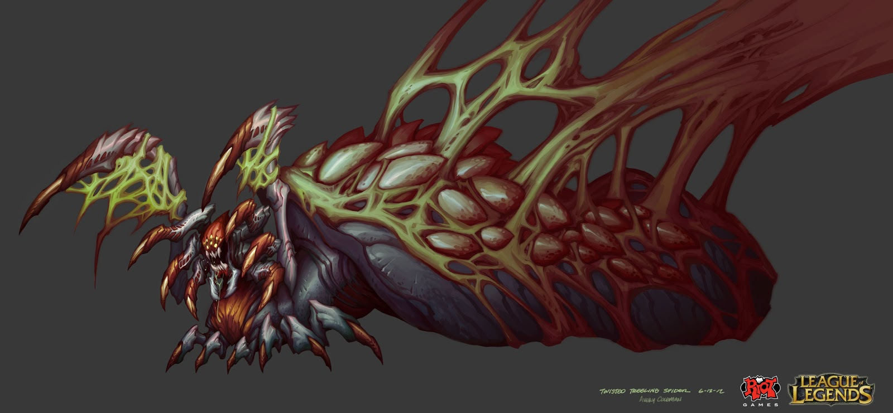

Elise and the Spider God
Born in Noxus, to House Kythera, Lady Elise learned how to use beauty to influence those with a weak mind. She had a plan to marry the scion of House Zaavan, and although there was much competition, she charmed her soon-to-be husband and manipulated the minds of her competition. After the marriage, the House Zaavan grew strong, and so did House Kythera. In spite of the fact that Elise's husband was the face of the house, everyone knew that it was Elise who truly held power. Her husband didn't mind this, but it soon became a light joke among the Noxian people. One night, he became so fed up, that he rigged Elise's drink with disfiguring poison. She drank it, and while her body started to become disfigured, he laid out the terms in order to get the antidote. He wanted her to "withdraw from society" and "stay out of his way." Elise realized what she needed to do, and believing that the antidote was on his person, she palmed her dagger and stabbed her husband. She found the antidote and drank it, but the damage had already been done. She was hideously disfigured. Her husband got his first wish though, as she spent most of her time, as the mistress of House Zaavan, yes, but also just walking around her palace, in isolation. She only went out during the night hours. One night, she ran into a veiled woman, who pushed a Black Rose into her hand and promised that she could give her beauty back. Elise half-dismissed the thought, but went searching for the Black Rose sigil during later nights. She finally found one, which led to another one, which led to another, and so on. Following the roses, she came upon the actual Black Rose, a secret society that practiced the dark powers of magic.
Elise became a regular visitor, but sought for the promise promised to her by the veiled woman. The woman spoke of a place called the Shadow Isles and told Elise about one of acolytes who ventured into the lair of a spider god, and never returned. The acolyte had a dagger with them, that was infused with magic that could give Elise her beauty back again. Elise accepted the challenge, and led a group of devotees to the Shadow Isles. Once they reached, they went to find the Spider God's lair. Only 6 remained once they reached the lair, as the others were taken away by wraiths and such. However, they were all killed as the Spider God burst from the cave and ate everyone. Elise saw the dagger on the floor, and went to grab it. Unfortunately, the Spider God sunk it's fangs into her shoulder, causing her to fall forward--onto the dagger. The magic of the dagger flowed through her body as the dagger pierced her heart, and the magic mixed with the venom of the Spider God. Against all better odds, she was suddenly transformed into a form more beautiful than she was ever before. Her scars vanished, and her flesh grew back. This much was the work of the dagger's magic. The Spider's venom had other ambitions. She writhed on the ground as spider legs pushed from her flesh.
The God rose above her, but rather than consume her, they both realized the benefit of this "symbiosis." Elise returned to her ship, and returned to Noxus. She met up again with the veiled woman, and made a pact. The Black Rose would provide Elise with acolytes to give to the Spider God, and in return, she would bring any artifacts of power to the Black Rose. She, once again, returned to power to the House Zaavan, becoming known as the "beautiful, yet unreachable recluse." No one except Elise knows what the Spider God looks like, and those who saw it didn't live to tell the tale. However, there are rumors that the Spider God spoke of is the same as the Vilemaw in the Twisted Treeline.
 